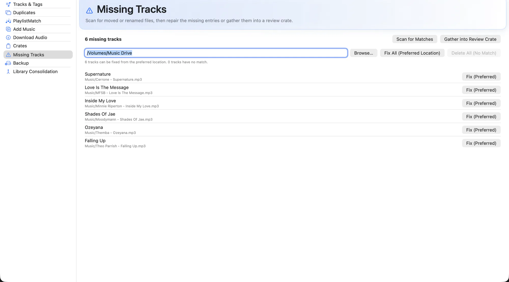

Move a folder in Finder, rename a drive, or reorganise your music once, and Serato loses the thread. Tracks show as cannot be located, and everything attached to them — cues, loops, beat grid, play count, crate membership — goes with them.
Missing Tracks scans your library for references that no longer resolve, then looks for where each file went. Fixes are applied per-track, only when you say so.

What it does
- Full library scan. Every unresolved reference in
database V2and in your crates, in one list. - Candidate matching. Likely new locations are found by filename and file size, so a moved or renamed file can be reconnected.
- Explicit fixes only. Nothing is repaired silently. You apply each fix, and anything ambiguous is reported rather than guessed at.
- Repairs in place. The existing library row is re-pointed instead of being replaced, so cues, beat grids and crate membership survive the repair.
- Review crate. Send whatever could not be resolved to a crate so you can work through it inside Serato later.
- Bulk repair from the CLI. For a library knocked badly out of sync by an old move,
EZLibraryCLI repair-locationsdoes the same job across thousands of entries at once.
How to use it
-
Mount your drives
Anything on external storage has to be connected, or its tracks look missing when they are not.
-
Scan
Run the scan from the Missing Tracks tab and let it finish.
-
Review candidates
Each missing track shows the file EZLibrary believes it now points to. Confirm the ones that look right.
-
Apply, then check in Serato
Apply the fixes with Serato closed, then reopen Serato and confirm the tracks resolve.
If a whole library was moved at once, try the CLI first: swift run EZLibraryCLI repair-locations --search /Volumes/Music previews the whole repair without writing anything. Add --apply when the preview looks right.
Related
Try it on your own library
Free and open source. Takes a backup before it touches anything.